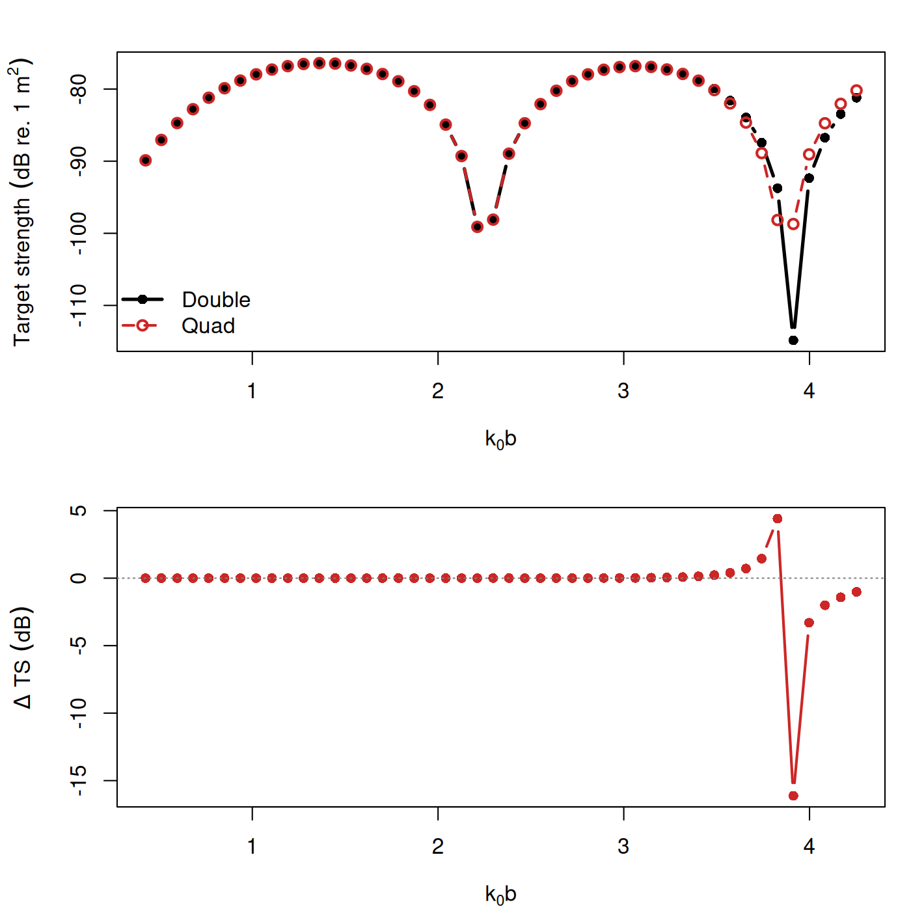
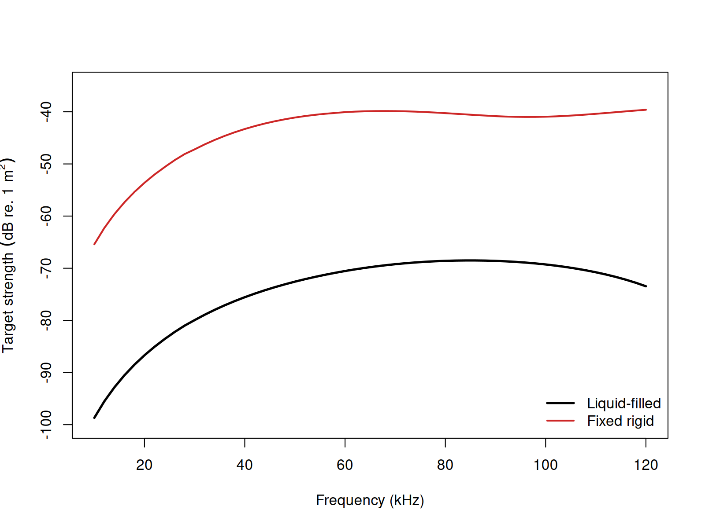

acousticTS implementation
PSMS solves canonical prolate-spheroidal scattering problems in spheroidal coordinates (Spence and Granger 1951; Furusawa 1988).
The principal choices are the boundary condition, incident roll angle
phi_body, numerical precision, modal stopping rule, and
overlap quadrature.
Prolate spheroid object generation
library(acousticTS)
prolate_shape <- prolate_spheroid(
length_body = 40e-3,
radius_body = 4e-3,
n_segments = 100
)
prolate_object <- fls_generate(
shape = prolate_shape,
density_body = 1045,
sound_speed_body = 1520,
theta_body = pi / 2
)
prolate_object## FLS-object
## Fluid-like scatterer
## ID:UID
## Body dimensions:
## Length:0.04 m(n = 100 cylinders)
## Mean radius:0.0031 m
## Max radius:0.004 m
## Shape parameters:
## Defined shape:ProlateSpheroid
## L/a ratio:10
## Taper order:N/A
## Material properties:
## Density: 1045 kg m^-3 | Sound speed: 1520 m s^-1
## Body orientation (relative to transducer face/axis):1.571 radiansUse PSMS when a prolate spheroid is the intended geometric idealization, not merely because a target is elongated.
Calculating a TS-frequency spectrum
frequency <- seq(38e3, 120e3, by = 8e3)
prolate_object <- target_strength(
object = prolate_object,
frequency = frequency,
model = "psms",
boundary = "liquid_filled",
phi_body = pi,
n_integration = 96,
simplify_Amn = TRUE
)This example chooses the fluid-filled boundary because it shows the
most demanding PSMS workflow. The boundary argument
determines the physical interface conditions, phi_body
controls the roll orientation used in the spheroidal geometry, and
n_integration together with simplify_Amn
affects how the coupled fluid-filled system is evaluated
numerically.
For PSMS, boundary = "liquid_filled" and
boundary = "gas_filled" use the same penetrable-interface
formulation. The difference is not a separate boundary equation. It is
the material contrast carried by the scatterer object itself: an
FLS object supplies liquid-like body properties, while a
GAS object supplies gas-like body properties. In that
sense, the two options are best read as liquid-filled and gas-filled
instantiations of the same underlying penetrable PSMS problem. In the
current implementation, however, the public gas-filled path is routed
onto the simplified penetrable formulation because that is the branch
that stays externally consistent on the published benchmark
geometry.
For rigid and pressure-release boundaries, the PSMS bookkeeping is simpler because the modal coefficients remain effectively diagonal by retained degree. For fluid-filled runs, the numerical settings deserve more attention because the overlap integrals and dense solves are part of the practical calculation.
If precision = "quad" is requested, the main practical
warning is cost. Quad
precision remains substantially slower than double precision because
the spheroidal functions, overlap integrals, and kernel matrices all
grow quickly with acoustic size. That is true for every PSMS boundary,
and it is especially important for the full liquid-filled solve and for
the externally benchmarked gas-filled simplified branch.
The implementation reduces some of that burden by batching spheroidal-function calls over blocks of m, reusing the incident angular matrix to construct the backscatter angular matrix through parity, and avoiding unnecessary rectangular expansions of triangular modal data. Even with those savings, high-ka PSMS sweeps in quad precision can take a very long time.
That means precision = "quad" should be read as a tool
for difficult cases, not as a universal default. It is most useful when
the double-precision solution shows visible instability at higher modal
limits or when benchmark agreement deteriorates at larger reduced
frequencies. When the double-precision and quadruple-precision curves
already agree to within the scientific tolerance of interest, the faster
double-precision path is usually the more practical choice.
Adaptive mode
adaptive = TRUE retains the same PSMS equations and hard
modal ceilings, but allows the calculation to stop when the remaining
modal tail is numerically inactive (Press et al. 2007; Roy
and Reinhardt 2026; Temme
2026).
The hard modal limits remain the same in both modes. The initialization step still defines:
m_{\max} = \left\lceil 2 k_0 b \right\rceil, and:
n_{\max} = m_{\max} + \left\lceil \frac{h_0}{2} \right\rceil.
When adaptive = FALSE, those limits are carried through
literally. When adaptive = TRUE, they are treated as upper
bounds. The code is then allowed to stop early only if the tail is both
small and flattening out, rather than continuing all the way to those
caps by default.
That adaptive logic operates in three layers.
For the full liquid-filled backscatter solve,
adaptive = TRUEowns the overlap quadrature order internally. In that path, a user-suppliedn_integrationis ignored on purpose. The implementation uses the retained modal ceilings themselves as the main difficulty scale, with a smaller bonus from the larger of |\chi_1| and |\chi_2|. Lower modal difficulty therefore gets fewer quadrature nodes, while harder runs climb toward the same hard cap used by the literal path. This makes the quadrature rule general to the retained PSMS problem rather than tied to one particular example geometry.Inside each retained azimuthal order m, the backscatter evaluators monitor the sizes of successive modal terms in n. The code only stops the inner tail if the current term remains below a numerical cutoff and its magnitude gradient relative to the previous term has also flattened. In other words, the rule is not “small enough once.” It is “small enough and no longer recovering.”
Across m, the same idea is applied to whole m-band contributions. Several successive m-bands must be both negligible and gradient-flat before the outer tail is stopped. This is what allows
adaptive = TRUEto matter not only forliquid_filledandgas_filled, but also forfixed_rigidandpressure_release.
For the full liquid-filled backscatter path, there is one additional adaptive step before the dense system is even built for a given m. The code forms a cheap proxy from the angular and radial factors and uses that proxy to decide whether the far tail in n is already inactive. If it is, the expensive overlap and kernel system is only built for the shorter active part of the retained degree range.
The cutoffs themselves are precision-aware. The relative tolerance
used in the modal-tail checks remains tighter in quadruple precision
than in double precision, and an absolute floor is also enforced so that
the adaptive rule remains meaningful even when the accumulated sum is
very small. This is why adaptive = TRUE should be read as a
convergence-aware shortcut rather than as a looser approximation.
Two practical consequences follow from that design. First,
adaptive = TRUE is most useful for backscatter spectra,
which are the main PSMS workflow exposed by the package. Second, the
runtime gain is usually largest for the full fluid and gas problems,
because that is where early tail trimming can also reduce the size of
the dense per-m systems rather than
only the final modal summation.
The safest way to use the switch is:
- leave
adaptive = FALSEwhen reproducing a benchmark or performing a strict convergence study, - use
adaptive = TRUEwhen you want a faster exploratory backscatter sweep, - and then compare the two if the high-ka part of the spectrum will be interpreted closely.
The code below shows the two usage patterns explicitly.
# Literal hard-cap evaluation
obj_literal <- target_strength(
object = prolate_object,
frequency = frequency,
model = "psms",
boundary = "liquid_filled",
phi_body = pi,
adaptive = FALSE,
n_integration = 96,
simplify_Amn = FALSE,
precision = "quad"
)
# Adaptive backscatter evaluation
obj_adaptive <- target_strength(
object = prolate_object,
frequency = frequency,
model = "psms",
boundary = "liquid_filled",
phi_body = pi,
adaptive = TRUE,
simplify_Amn = FALSE,
precision = "quad"
)In the second call, n_integration is omitted on purpose.
For the full liquid-filled PSMS solve, adaptive = TRUE
chooses the quadrature order internally from the retained modal
difficulty and ignores a user-supplied n_integration. The
public gas-filled path currently uses the simplified penetrable
formulation instead, so it does not take that adaptive quadrature
branch.
Benchmark comparisons
The main numerical switches are compared on the published benchmark
geometry. For fixed_rigid, pressure_release,
and liquid_filled, the summary uses the bundled
benchmark_ts data (Jech et al. 2015; Macaulay and
contributors 2024). For gas_filled, the
same 140 x 10 mm broadside prolate geometry is compared
with boundary element predictions (Betcke and Scroggs 2021).
Three coverage details matter when reading the numbers:
-
fixed_rigidandpressure_releasebenchmark values are only available at12, 18, 38, 70 kHz. - In Table III from Jech et al. (2015),
NBis defined as “no benchmark.” Instead, the gas-filled prolate spheroid was benchmarked against a BEM model at12, 38, 70, 120 kHz. - The liquid-filled benchmark has values at
12, 18, 38, 70, 120, 200, 250, 300, 400 kHz, but not at333 kHz.
The reported \Delta values are therefore computed only where validated benchmark values exist.
The full diagnostic grid retained by the configuration comparison is:
12,\; 18,\; 38,\; 70,\; 120,\; 200,\; 250,\; 300,\; 333,\; 400\ \text{kHz}.
Benchmark summary
| Boundary | Precision | adaptive |
n_integration |
Max abs. \Delta TS (dB) | Mean abs. \Delta TS (dB) |
|---|---|---|---|---|---|
fixed_rigid |
double |
FALSE |
96 |
0.00674 | 0.00230 |
fixed_rigid |
double |
TRUE |
0.00674 | 0.00230 | |
fixed_rigid |
quad |
FALSE |
96 |
0.00096 | 0.00083 |
fixed_rigid |
quad |
TRUE |
0.00096 | 0.00083 | |
pressure_release |
double |
FALSE |
96 |
0.00412 | 0.00251 |
pressure_release |
double |
TRUE |
0.00412 | 0.00251 | |
pressure_release |
quad |
FALSE |
96 |
0.00433 | 0.00293 |
pressure_release |
quad |
TRUE |
0.00433 | 0.00293 |
| Precision | simplify_Amn |
adaptive |
n_integration |
Max abs. \Delta TS (dB) | Mean abs. \Delta TS (dB) |
|---|---|---|---|---|---|
double |
FALSE |
FALSE |
96 |
8.67114 | 1.53575 |
double |
FALSE |
TRUE |
17.34265 | 4.59850 | |
double |
TRUE |
FALSE |
96 |
7.18195 | 2.22574 |
double |
TRUE |
TRUE |
7.18195 | 2.22574 | |
quad |
FALSE |
FALSE |
96 |
0.08263 | 0.02805 |
quad |
FALSE |
TRUE |
0.08348 | 0.02806 | |
quad |
TRUE |
FALSE |
96 |
3.65223 | 1.46801 |
quad |
TRUE |
TRUE |
3.65223 | 1.46801 |
Several practical points follow from this comparison.
- For
fixed_rigidandpressure_release, both precisions remain benchmark-close over the frequencies for which benchmark values are available, and the adaptive early-stop logic does not materially change those benchmark \Delta values on this short grid. - When
adaptive = FALSE, the model keeps the literal fixedn_integration = 96default. Whenadaptive = TRUE, the table leaves that cell blank because the adaptive path no longer treats quadrature order as a user-fixed input. -
simplify_Amnonly affects the fluid or gas PSMS solve, so that column is blank forfixed_rigidandpressure_release. - For liquid-filled PSMS, the full formulation with
simplify_Amn = FALSEandprecision = "quad"remains the only configuration in this table that stays benchmark-close through the higher-frequency benchmark range. - The simplified gas-filled prolate spheroid model tracks closely with
the BEM predictions. That behavior is exactly why
simplify_Amnis currently better suited for gas-filled PSMS. The gas interior creates an extreme-contrast fluid problem, and the present dense overlap-coupled full gas solve becomes numerically unstable there. The simplified branch removes the unstable off-diagonal coupling and, for this benchmark geometry, is the one that agrees withBEMandFEMpredictions, as well as external software references (Khodabandeloo et al. 2025). In the current public implementation, requests for the full gas-filled branch are therefore routed onto this simplified formulation. - The adaptive liquid-filled path is useful in quad precision, but it
is not universally beneficial. In particular, the
precision = "double",simplify_Amn = FALSE,adaptive = TRUEcombination drifts much farther from benchmark on this grid than the literal double-precision run. - The largest liquid-filled deviations occur in deep null
neighborhoods, where small phase or truncation differences can produce
visibly larger
TSdifferences in dB than they would on a linear scattering-amplitude scale.
The summary statistics are helpful, but they still compress where the differences actually occur. For the main liquid-filled benchmark configuration, the frequency-specific comparison is:
| Frequency (kHz) | Benchmark TS (dB) | Literal TS (dB) | Adaptive TS (dB) | Adaptive n_integration
|
Literal \Delta TS (dB) | Adaptive \Delta TS (dB) |
|---|---|---|---|---|---|---|
| 12 | -87.05 | -87.05331 | -87.05331 | 32 | -0.00331 | -0.00331 |
| 18 | -81.19 | -81.19965 | -81.19965 | 32 | -0.00965 | -0.00965 |
| 38 | -77.17 | -77.20046 | -77.20046 | 32 | -0.03046 | -0.03046 |
| 70 | -76.92 | -76.95042 | -76.95042 | 32 | -0.03042 | -0.03042 |
| 120 | -80.58 | -80.55970 | -80.55951 | 32 | 0.02030 | 0.02049 |
| 200 | -89.31 | -89.39263 | -89.39348 | 48 | -0.08263 | -0.08348 |
| 250 | -79.39 | -79.42879 | -79.42819 | 56 | -0.03879 | -0.03819 |
| 300 | -77.52 | -77.51659 | -77.51653 | 64 | 0.00341 | 0.00347 |
| 333 | NA |
-76.90684 | -76.90677 | 72 | NA |
NA |
| 400 | -78.41 | -78.44349 | -78.44309 | 88 | -0.03349 | -0.03309 |
That table compares the literal run adaptive = FALSE,
n_integration = 96 against the adaptive run
adaptive = TRUE, which selects the quadrature order
internally. The largest differences occur near deeper nulls, which is
why the absolute TS deltas can look more dramatic than the
underlying linear-amplitude mismatch would suggest.
Double- versus quadruple-precision drift
The benchmark table already shows that the full liquid-filled PSMS
solve can separate materially between precision = "double"
and precision = "quad" once the acoustic size grows. A
direct way to see that is to hold every other setting fixed and then
plot the double - quad difference against the reduced size
parameter k_0 b, where b is the spheroid minor
radius.
precision_freq <- c(12e3, 18e3, 38e3, 70e3, 100e3)
precision_obj <- fls_generate(
shape = prolate_spheroid(
length_body = 0.14,
radius_body = 0.01,
n_segments = 80
),
theta_body = pi / 2,
density_body = 1028.9,
sound_speed_body = 1480.3
)
precision_double <- target_strength(
object = precision_obj,
frequency = precision_freq,
model = "psms",
boundary = "liquid_filled",
phi_body = pi,
adaptive = FALSE,
precision = "double",
simplify_Amn = FALSE,
n_integration = 96,
density_sw = 1026.8,
sound_speed_sw = 1477.3
)
precision_quad <- target_strength(
object = precision_obj,
frequency = precision_freq,
model = "psms",
boundary = "liquid_filled",
phi_body = pi,
adaptive = FALSE,
precision = "quad",
simplify_Amn = FALSE,
n_integration = 96,
density_sw = 1026.8,
sound_speed_sw = 1477.3
)
precision_df <- data.frame(
frequency = precision_freq,
k0b = 2 * pi * precision_freq * 0.01 / 1477.3,
double_ts = precision_double@model$PSMS$TS,
quad_ts = precision_quad@model$PSMS$TS
)
precision_df$delta_ts <- precision_df$double_ts - precision_df$quad_ts
For this full liquid-filled run, the double- and quadruple-precision
curves are effectively indistinguishable through k_1 b < 1, differ by only about
1.4e-07 dB at 38 kHz, then separate to about
0.01 dB by 70 kHz (k_1 b \approx 2.98) and to about
1.02 dB by 100 kHz (k_1 b \approx 4.25). That is the practical
reason the benchmark table above starts to favor quadruple precision
once the retained PSMS system moves into the higher-frequency penetrable
regime.
Cross-software implementation checks
The cross-software checks use 12, 18, 38, 70, 100 kHz
for liquid-filled, rigid, and pressure-release cases. The gas-filled
comparison instead uses the published benchmark geometry with
Prol_Spheroid (Khodabandeloo et al. 2025)
and echoSMs (Macaulay and
contributors 2024).
Prol_Spheroid only treats penetrable prolate spheroids,
so its cells are N/A for fixed_rigid and
pressure_release.
Cross-software summary
| Case | Frequency set (kHz) | Max abs. \Delta TS | Mean abs. \Delta TS (dB) |
|---|---|---|---|
fixed_rigid |
12, 18, 38, 70, 100 |
0.49692 |
0.10091 |
pressure_release |
12, 18, 38, 70, 100 |
0.08619 |
0.01757 |
liquid_filled |
12, 18, 38, 70, 100 |
1.01676 |
0.20537 |
| Case | Frequency set (kHz) | Max abs. \Delta TS (dB) | Mean abs. \Delta TS (dB) | Max abs. \Delta TS vs vectorized (dB) | Mean abs. \Delta TS vs vectorized (dB) |
|---|---|---|---|---|---|
fixed_rigid |
12, 18, 38, 70, 100 |
N/A |
N/A |
N/A |
N/A |
pressure_release |
12, 18, 38, 70, 100 |
N/A |
N/A |
N/A |
N/A |
liquid_filled |
12, 18, 38, 70, 100 |
0.00128 |
0.00055 |
0.00128 |
0.00055 |
The penetrable liquid-filled case remains close to the independent
Prol_Spheroid implementation, with a maximum absolute difference of
0.00128 dB over the five-frequency set.
By contrast, the shared echoSMs::PSMSModel
comparison separates at the higher two frequencies, especially for the
penetrable cases. The liquid-filled difference reaches about
1.02 dB at 100 kHz. The gas-filled comparison
uses the benchmark geometry because only the simplified gas branch is
currently stable and externally consistent.
Gas-filled cross-software comparison
The gas-filled check uses the published benchmark geometry:
L = 140 mm, a = 10 mm,
theta_body = 90 deg, phi_body = pi,
density_body = 1.24 kg m^-3, and
sound_speed_body = 345 m s^-1. The frequency set is
12, 18, 38, 70, 120, 200 kHz. Requests for the full
gas-filled branch are currently routed to the same simplified penetrable
formulation used when simplify_Amn = TRUE.
| Case | Frequency set (kHz) | Max abs. \Delta TS (dB) | Mean abs. \Delta TS (dB) |
|---|---|---|---|
benchmark broadside, double, simplified, literal |
12, 18, 38, 70, 120, 200 |
2.19518 |
0.59593 |
benchmark broadside, double, simplified, adaptive |
12, 18, 38, 70, 120, 200 |
2.19518 |
0.59593 |
benchmark broadside, quad, simplified, literal |
12, 18, 38, 70, 120, 200 |
0.13946 |
0.04163 |
benchmark broadside, quad, simplified, adaptive |
12, 18, 38, 70, 120, 200 |
0.13946 |
0.04163 |
Accessing results
## frequency f_bs sigma_bs TS
## 1 38000 -8.946062e-05-0.01218687i 0.0001531304 -76.29877
## 2 46000 -2.192256e-04-0.02005001i 0.0002081249 -73.63352
## 3 54000 -4.465195e-04-0.02953222i 0.0002611520 -71.66213
## 4 62000 -8.006501e-04-0.04005366i 0.0003085167 -70.21443
## 5 70000 -1.298529e-03-0.05066399i 0.0003456888 -69.22629
## 6 78000 -1.928321e-03-0.06024267i 0.0003689549 -68.66053Comparing fluid-filled and rigid boundaries
The boundary condition changes the coefficient solve without changing the outer geometry, so it is a straightforward first comparison when checking whether a prolate spheroid is being parameterized consistently.

This comparison is useful because it isolates one of the main PSMS decisions without changing the geometric idealization. If the rigid and fluid-filled curves differ substantially, that is not a sign of inconsistency by itself. It is evidence that the boundary physics is materially affecting the prolate-spheroidal response, which is exactly the kind of sensitivity the model is meant to expose.
For practical PSMS work, the first controls to revisit are usually:
- the boundary condition, because it changes the coefficient problem fundamentally,
- the orientation arguments such as
phi_body, because spheroidal geometry is anisotropic, -
adaptive, because it controls whether the hard truncation limits are treated as literal caps or as upper bounds for early tail stopping, -
n_integration, because the overlap integrals must be resolved accurately whenever they are actually formed, and -
simplify_Amnandprecision, because they affect the stability and cost of the fluid-filled solve.
Those are the settings to revisit first when a spectrum appears unexpectedly noisy, unexpectedly sensitive, or unexpectedly expensive to evaluate.